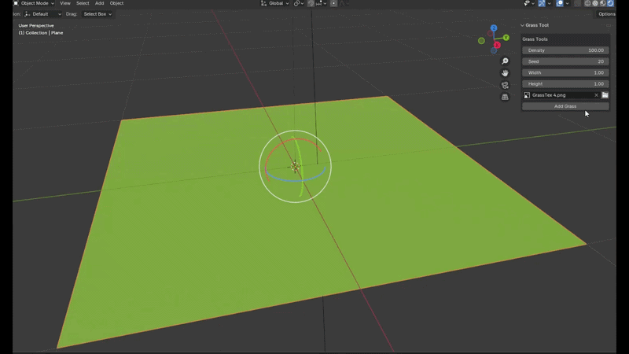
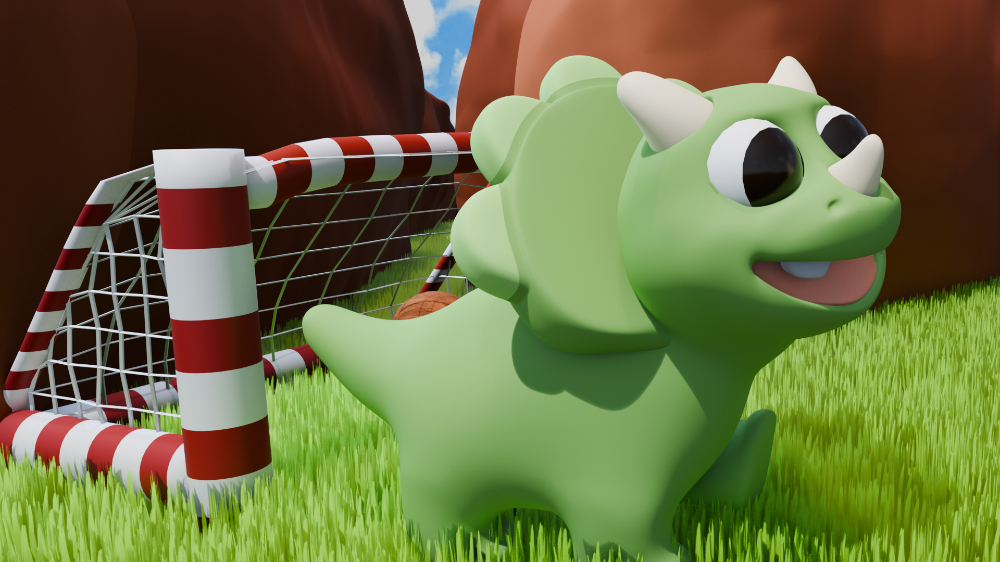

04 / Project detail
Nolan & Nelson
Nolan & Nelson is a new personal animation project inspired by my nephews, Nolan and Nelson. The series follows two young dinosaur best friends, a triceratops and a T. rex, on small adventures together.
I started Nolan & Nelson as a way to give myself a creative outlet while continuing to learn and experiment with different parts of the animation pipeline. With only two episodes completed so far, the project is still very much at the beginning, and that's part of what excites me about it.
I create each short independently, working across modeling, rigging, animation, environments, lighting, rendering, editing, sound, and tool development. Taking on the entire process gives me the freedom to experiment, make mistakes, and learn something new with everything I make.
Learning Through Each Episode
One of my main goals for Nolan & Nelson is simple: make each episode better than the last.
With every new short, I want to choose something to learn or improve. That might mean refining the character rigs or models, getting better at animation, experimenting with lighting and environments, or finding a more efficient way to organize and reuse assets between shots.
Because the project is still new, many of these workflows are things I'm figuring out as I go. Rather than trying to build the perfect pipeline before making anything, I want the production itself to show me what needs improving. Each episode becomes both a finished creative project and an opportunity to make the next one easier or better.
Building the World
The characters and their environment are still evolving along with the series. Instead of considering an asset permanently finished after its first appearance, I can revisit the models, rigs, materials, environments, and lighting as I learn new techniques.
Over time, I hope that progression becomes visible in the series itself, both in the quality of the animation and in the systems and workflows behind it.
Stylized Grass Tool


One of the first technical projects to come directly out of Nolan & Nelson was my Stylized Grass Tool for Blender.
I was inspired by this YouTube tutorial and wanted to create a tool that would automate the workflow. I used this as an opportunity to learn Blender Geometry Nodes and Blender Python development.
I created a procedural Geometry Nodes system for scattering stylized grass and then developed a Blender add-on that lets me apply and control the system through an artist-facing interface. The tool exposes controls for properties such as density, randomization, image selection, and blade scale while handling much of the underlying setup automatically.
What started as a small production need quickly became its own learning experience, introducing me to procedural workflows, Blender's Python API, tool development, and packaging a tool so that it could be reused across different Blender projects.
Growing the Project
The Grass Tool is the first example of something I hope to continue doing as I make more Nolan & Nelson episodes.
As I run into new challenges, I want to keep asking whether there's an opportunity to build a tool, improve a workflow, or learn a new technique that can help solve the problem. Sometimes the result might be a better rig or environment; other times it might become an entirely new tool.
That's one of my favorite things about this project: the creative work gives me new technical problems to solve, and solving those problems gives me new ways to be creative.
Nolan & Nelson is still just getting started, and I'm excited to see how both the series and the tools behind it evolve with each new episode.